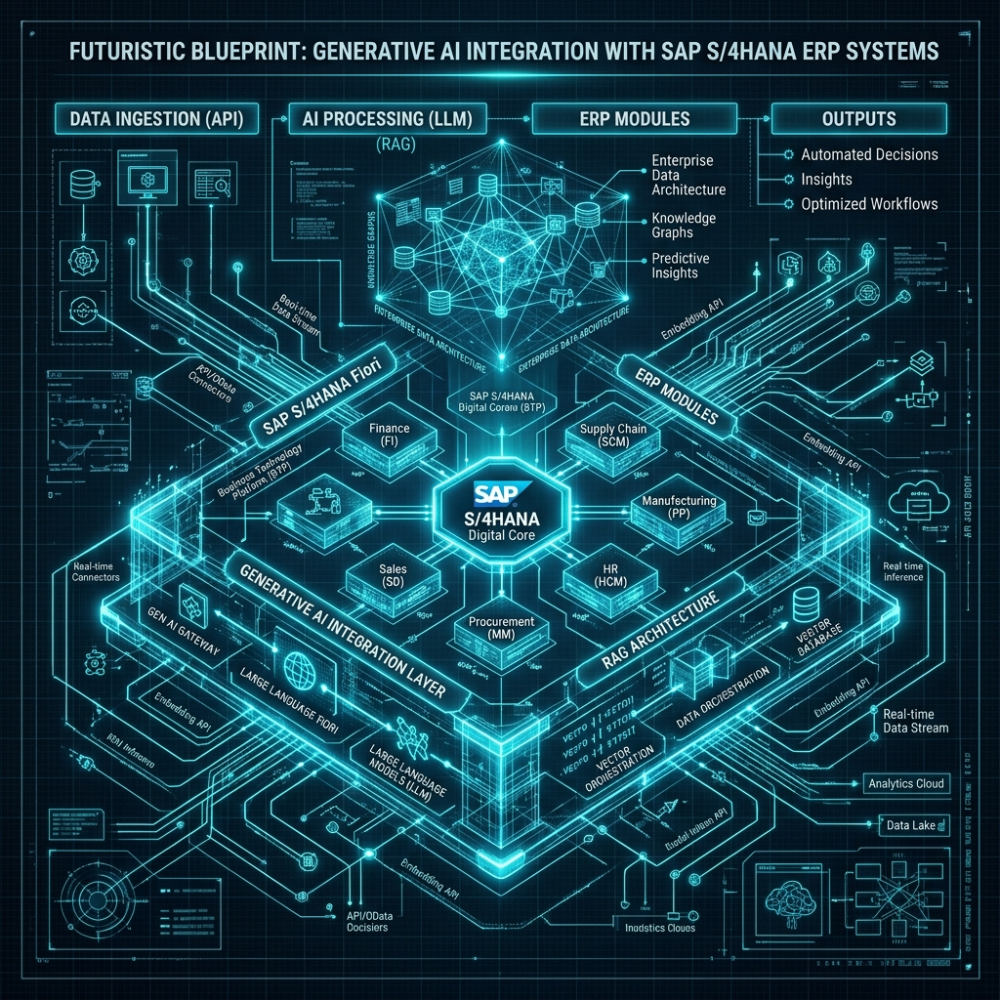

Insights & Strategic
Technology Briefings
Deep-dives into modern cloud systems, SAP migration frameworks, cognitive AI architectures, and enterprise security governance.
The Enterprise AI Blueprint: Integrating Generative AI with SAP S/4HANA & Core ERP Systems
A comprehensive technical whitepaper on embedding real-time machine learning inference, automated document understanding, and predictive analytics directly into enterprise ERP workflows.

Architecting Zero-Trust Governance in Hybrid Cloud Environments
How global enterprises enforce identity-first security, continuous authentication, and encrypted telemetry across AWS, Azure, and on-premise SAP deployments.
Edge Compute & Real-Time Telemetry in Smart Manufacturing
Low-latency data processing models at the plant edge, enabling real-time equipment telemetry and predictive asset maintenance.
Responsible AI & Governance Frameworks for Enterprise Operations
Establishing explainability, data privacy compliance, and auditability in automated decision-making pipelines for modern growing enterprises.
AVAN Learning & Executive Bootcamps
Continuous upskilling in SAP S/4HANA, Cloud Engineering, Cybersecurity, and AI Architectures for enterprise teams and emerging talent.
Explore Learning Academies school